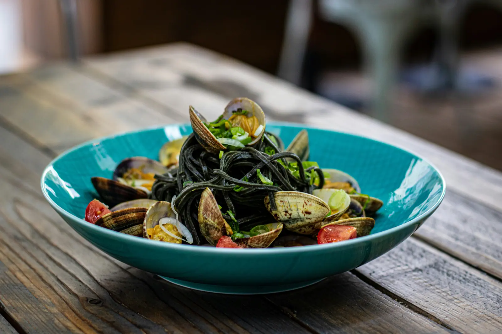
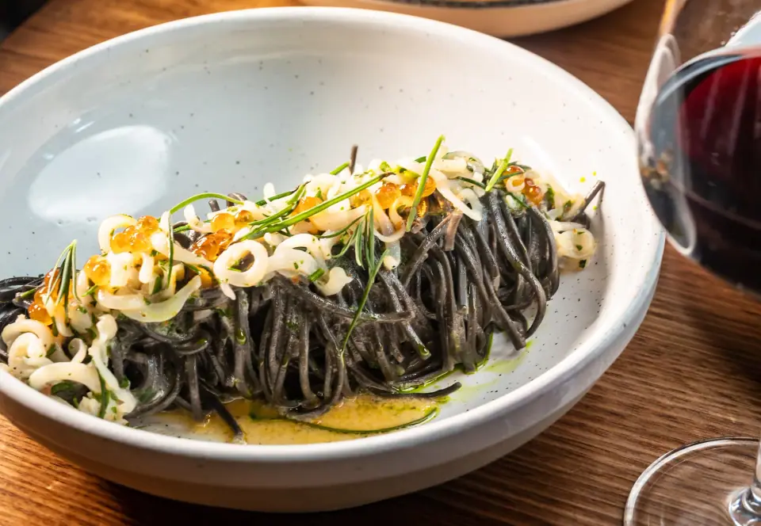
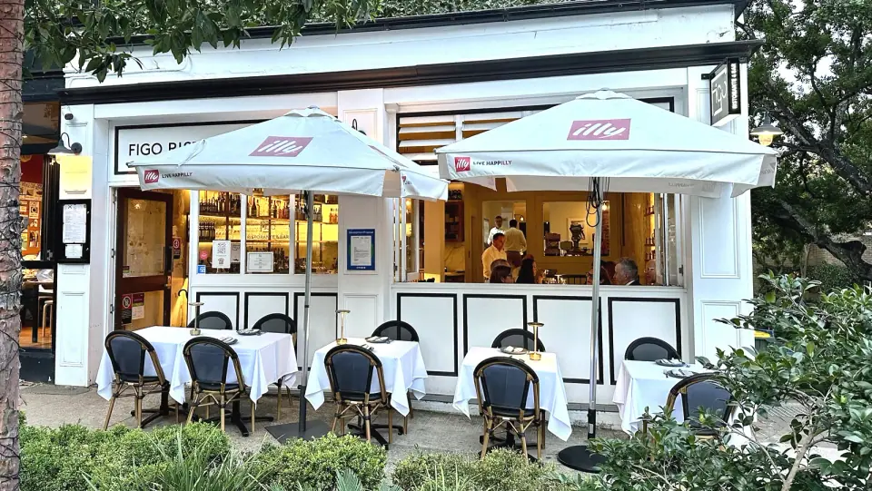

Relaxed Italian dining
An extensive antipasti selection alongside house-made pastas, curated by Head Chef Mattia Porcellato.
- Now
- HoursMon to Wed 5:30pm–10:30pm
Thu to Sat 12pm–11pm
Sun closed - Address3/56-60A Bayswater Rd, Rushcutters Bay NSW 2011
- Phone(+61) 2 8323 9883
The kitchen
We invite you to dine with friends and family in our open Italian kitchen.
From gourmet ingredients to some two hundred labels of Italian wine, Figo offers a curated approach to food and lifestyle that represents our heart, passion and love.

Rushcutters Bay
Find us on Bayswater Road
| Monday | 5:30pm–10:30pm |
|---|---|
| Tuesday | 5:30pm–10:30pm |
| Wednesday | 5:30pm–10:30pm |
| Thursday | 12pm–11pm |
| Friday | 12pm–11pm |
| Saturday | 12pm–11pm |
| Sunday | Closed |
- Patrons with food allergies should tell the waiter before ordering.
- Some two hundred labels of Italian wine, plus cocktails.
- Closed on Sundays.
